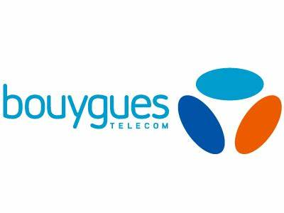
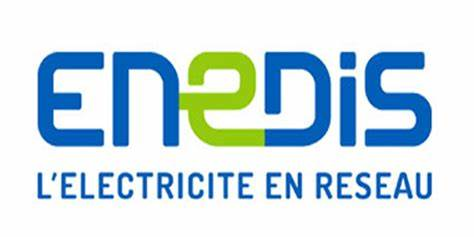
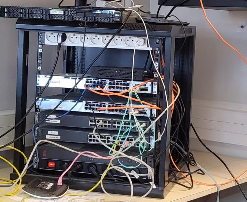

Mes Projets
Stage réaliser
Stage réaliser durant le lycée
- j'ais travailler comme technicien fibre chez Bouygues Telecom la fibre est essentiel pour garantir des connexions Internet rapides et fiables à travers la fibre optique. Ces professionnels sont responsables de l'installation, de la maintenance et de la réparation des réseaux de fibre optique, permettant ainsi aux clients de profiter de services haut débit 
- J'ai travaillé chez Enedis en tant que technicien en communication, et j'ai travaillé dans la section relevé de compteurs. Pour la communication, nous installions des antennes pour effectuer des relevés à distance. En ce qui concerne les relevés de compteur, nous nous rendions sur place uniquement si le relevé à distance ne fonctionnait pas. 
- J'ai travaillé en tant Support chez Antemeta j'ai aider les utilisateurs à résoudre leurs problèmes informatiques, à installer des logiciels, ou à gérer les configurations de leurs appareils. Gestion de systèmes l'utilisation de serveurs, l'installation de logiciels (Windows 11, chrome / modzilla, vpn antivirus) Application des configurations et des politiques de sécurité : j'ai appliquer des politiques de sécurité sur les postes de travail, comme les paramètres de verrouillage de session, les mises à jour automatiques, ou l’activation de l'antivirus. la gestion de permition via l'ad
Compétence
expérience lycéé
- Installation, configuration et administration de systèmes d'exploitation (Windows, Linux, etc.).
- Gestion des serveurs (serveurs web, de fichiers, de messagerie, etc.).
- Maintenance des réseaux (réseaux locaux, VPN).
- Supervision et optimisation des performances des réseaux et des systèmes.
- Sécurisation des infrastructures
- Mise en place des stratégies de sécurité (pare-feu, VPN, filtrage des accès).
- Gestion des droits d’accès et des comptes utilisateurs.
- Application des politiques de sauvegarde et de restauration.
-
Mes Projets
Projet classe
- Projet réseau Le Louvre
Tâches réalisées :
- Configuration du réseau : Passage en IP statique (192.168.1.1 / 255.255.255.0 / passerelle 192.168.1.254 / DNS 127.0.0.1), création et paramétrage d’un serveur DHCP pour l’attribution automatique des adresses IP.
- Mise en place des services réseau : Configuration des options DHCP : Routeur (192.168.1.254) et Serveur DNS (192.168.1.1), vérification du bon fonctionnement du DHCP avant et après son déploiement.
- Gestion des droits d’accès et des fichiers : Implémentation des permissions NTFS pour sécuriser les fichiers et dossiers.
- Installation et configuration d’Active Directory (AD DS) : Création d’un domaine et d’une forêt, gestion des utilisateurs et des groupes avec des permissions adaptées.
Le projet a permis de moderniser l’infrastructure réseau du musée du Louvre en mettant en place un système sécurisé et performant. Grâce à une architecture simplifiée, la gestion des ressources et des utilisateurs est devenue plus efficace. L’implémentation du serveur DHCP, d’Active Directory et des droits NTFS assure un contrôle optimal des accès et une meilleure sécurité des données. Cette amélioration optimise la connectivité des visiteurs et du personnel tout en réduisant les coûts de maintenance.
- projet station F infrastructure réseau
j'ai réaliser un projet Station F, visant à mettre en place une infrastructure réseau et système performante, repose sur une architecture robuste pour répondre aux besoins des startups. Le choix d'un file server performant permet une gestion centralisée des fichiers, facilitant l'accès et la synchronisation des données entre les utilisateurs. L'intégration de l'Active Directory (ADDS) permet de garantir une gestion fine des utilisateurs et des ressources avec une sécurité renforcée. La mise en place du DFS assure une haute disponibilité et une réplication efficace des données, optimisant ainsi la résilience du réseau. Enfin, une surveillance rigoureuse des logs et une sécurisation renforcée du réseau, notamment via des solutions comme EtherChannel, garantissent une continuité de service et une protection des données dans un environnement dynamique et en constante évolution.
